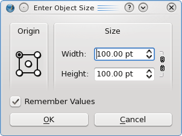
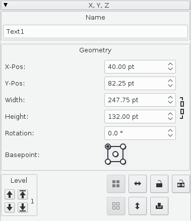
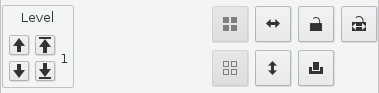
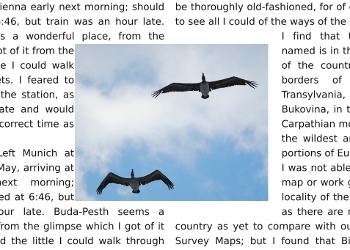

Working with Scribus is for the most part working with a frames environment. Some more generic terms you may see in menus and commands are objects or items, of which frames are one kind of object or item. There are 5 kinds of frames you will work with in Scribus:
| If you change your mind or press the wrong key, you can press Esc or the Spacebar to cancel, or click the toolbar icon for your next choice.
When you make one of the choices 1-3, your mouse cursor becomes activated to draw the frame, and a tooltip pops up to tell you the cursor's X-Pos and Y-Pos. As you click-drag to make the frame from one corner to its opposite, the tooltip now displays the Width and Height frame you are creating. For Shapes and Polygons, this describes the dimensions of the Bounding Box. Usually the next step is adding or doing something with the content, but we will leave that to the individual sections regarding each type of frame. |

Here we see the Enter Object Size dialog that comes up if you left-click somewhere on the page, rather than doing a click-drag operation. Obviously this can be very handy for creating a frame of a precise size and repeatedly doing so. |
Moving FramesThe simplest method is to click-hold inside the frame and move with the mouse. While this is taking place a tooltip tells you the position of the Basepoint (default basepoint is left upper corner). You can also use the arrow keys to move the frame as long as the cursor is not over any spinboxes. For more precise movement, use Properties > X,Y,Z tab (X-Pos and Y-Pos) and its spinboxes. Resizing FramesA selected frame shows a dotted red border and in addition small square handles at the corners and at the midpoints of each side. Click and drag a handle to make manual adjustments. If you hold down the Alt key and the cursor is not over a spinbox, you can resize the frame using the arrow keys. Use the Width and Height spinboxes for precision. |
 |
Moving Frames – Level to Level or Layer to LayerYou can move up or down levels using Properties > X,Y,Z tab, in the area labelled Level, either one level at a time or to the top or bottom. The number beside these arrows tells you which level your object is on (1 is the bottom).There are also keyboard shortcuts:
Final Section of Properties: X,Y,ZLooking at the last group of 7 buttons in the lower right corner of X,Y,Z, the two leftmost buttons, grayed out in this picture, will group and ungroup a collection of selected objects. The next two buttons, with the blue arrows, flip the object horizontally or vertically. The picture of the lock is where you can lock or unlock the selected object, and just to its right you can lock or unlock only the size of the object. The last button in the lower right corner enables is disables printing (and export to PDF) of the object. |
 |
The simplest way of selecting a group of frames is to click-drag around them. You have to be sure that any frame you wish to be selected is fully within the temporary rectangle you see during this operation. This may not work when you only want some of the frames in a particular rectangular space. In that situation you can manually select additional frames in a cumulative way by holding down Shift as you click. If you make a mistake, click again while holding Shift to deselect individual frames (this is a new feature as of the 1.3.5+ versions). If you have not yet grouped the frames, click outside these collectively selected frames to "break" the multiple selection. You can also combine these approaches by click-dragging around a number of frames, then Shift-clicking any you wish to select in addition or deselect.
Note: if you find an inability to select a frame underneath another using this method, consider that this frame may be on another layer. You may only work on one layer at a time.
|
The first important thing to remember is that this can be a property of any kind of frame, and that it applies to any text frames underneath it, underneath being not only on a lower level, but also a lower layer.
Secondly, you need to choose whether you want flow around the frame, the contour line, or the boundary box – making your choice in the Shape tab of Properties. For text and image frames, all 3 coincide with each other when they are created. As for shapes and polygons, only a rectangle would show this property, otherwise only the frame and contour lines coincide. Details will be found elsewhere, but in the Properties > Shape tab you can edit the frame/shape or contour line independently. In this screenshot below, the left column flows around the frame, the right around an edited contour line: |
|  |